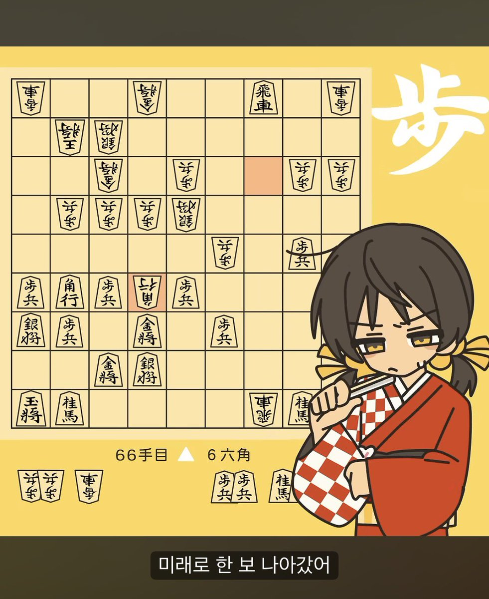
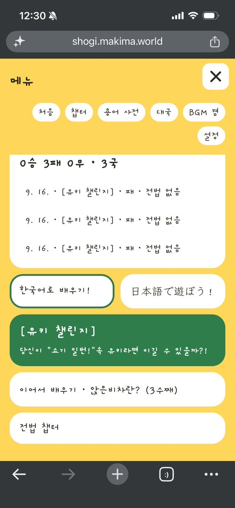
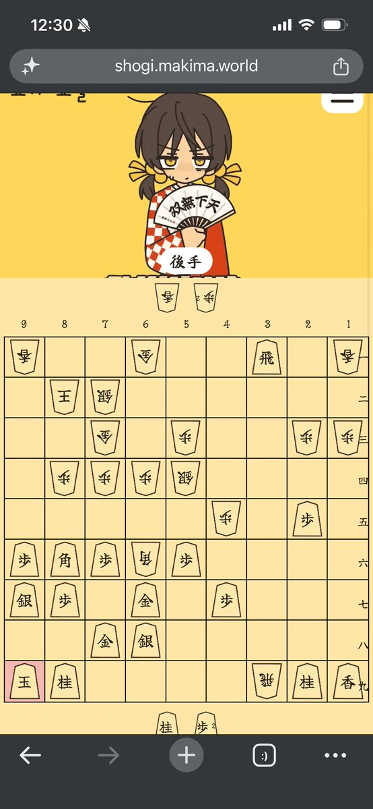
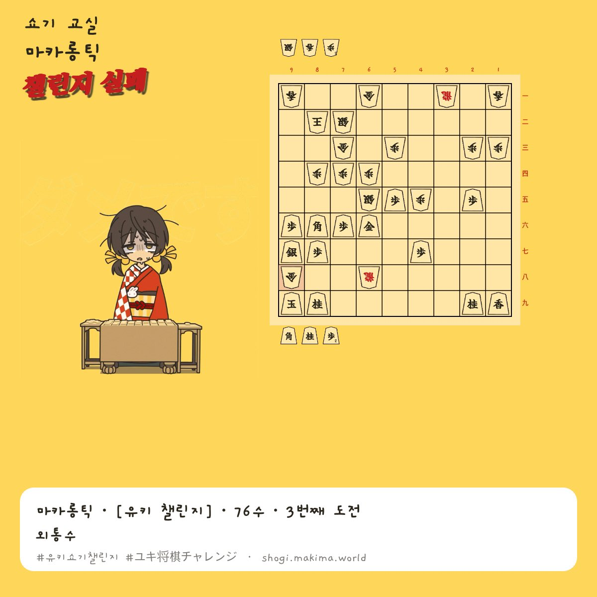

RT @kkollis1:
https://t.co/HY51ruYpNj
MV속 이 상황…
유키가 결국 패배합니다
대체 어떤 꼬라지길래 졌을까요?
우선 46각으로 들어온 상대수에 의해 장군이 걸린 상황입니다…
현재 수순은 66수
그런 유키의 상황을…
MV속 이 상황…
유키가 결국 패배합니다
대체 어떤 꼬라지길래 졌을까요?
우선 46각으로 들어온 상대수에 의해 장군이 걸린 상황입니다…
현재 수순은 66수
그런 유키의 상황을…



